佔點
隊伍按住道具的輸入幾秒鐘就能佔領它，只要守住就會持續得分。另一隊隨時可以搶過去。
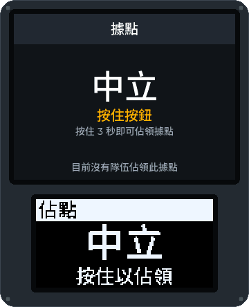
本頁由 AI 模型翻譯，尚未經過審閱。你用中文玩生存遊戲嗎？歡迎協助審閱：請見 GitHub 儲存庫的 docs/translations。
模式回應的是意圖（「有一隊正在搶這個道具」），而不是硬體，所以同一個腳本可以在 Field Box、有按鍵的盒子或 Android 手機上執行。目前已有十四種模式、一個附加規則和醫護包在軟體中寫好並測試過；都還沒在真實場地上跑過。
下面每個動畫都是由 Field Box 自己的韌體程式碼畫出來的，不是示意圖：上方是大螢幕，下方是小的 OLED，隨著該模式的一場遊戲進行。圖片下方的按鈕可以暫停動畫。
隊伍按住道具的輸入幾秒鐘就能佔領它，只要守住就會持續得分。另一隊隨時可以搶過去。

攻方啟動炸彈後要守住它；守方必須在引信燒完前拆除。爆炸會結束遊戲，攻方獲勝。用按住按鈕來啟動和拆除，或給每隊一組自己的按鍵密碼。
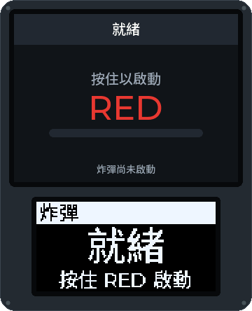
炸彈一回合接一回合，直到遊戲時間結束。進攻方啟動炸彈，防守方拆除。爆炸為進攻方得一分，拆除為防守方得一分；之後盒子休息，下一回合開始。得分較多的隊伍獲勝。
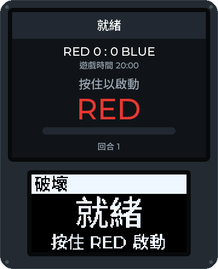
和佔點一樣佔領盒子，但一隊只有在同時守住所有盒子時才會得分。丟了一個，計分就停止。
守方一開始擁有所有據點。當他們只剩最後一個據點時，落敗倒數就會開始，直到他們再搶回另一個；倒數結束，攻方獲勝。
玩家身上帶著經簽署的 NFC 標籤。隊伍在站點掃描收集到的標籤：敵人的標籤確認擊殺，隊友的標籤則否決擊殺。偽造的標籤會被拒絕。
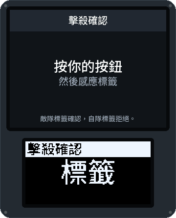
復活點依隊伍或依玩家計算命數，兩次復活之間有冷卻時間。一隊的命數用完就被淘汰。
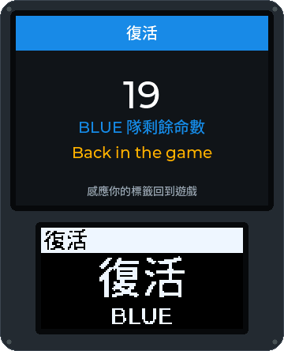
玩家拿自己的標籤在檢查點報到。盒子會計算每隊的玩家人數，也可以每次報到都給分。
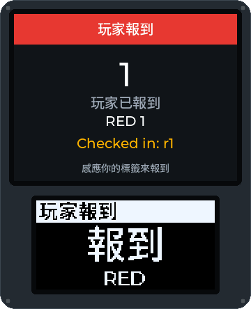
可以搭配任何模式：中彈的玩家掃描自己的標籤，按住按鈕一段設定好的時間就能被治療。醫護包會顯示還剩幾次治療；每位玩家在每個醫護包每場遊戲的治療次數有限，GM 可以從控制台補充醫護包，每次治療都會出現在 GM 的紀錄和玩家的畫面上。
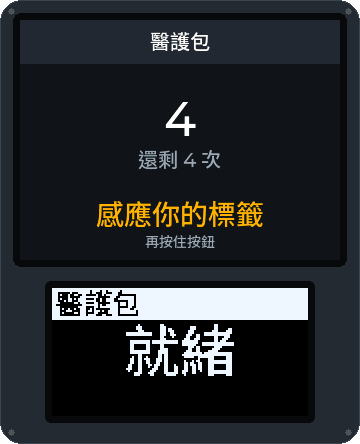
隊伍要佔領一個主站盒和它的衛星盒。只有主站會得分，佔領者同時守住的每個衛星都會提高它的分數；主站易手時，所有衛星都會回到中立。已在軟體中寫好並測試，還沒在真實盒子上玩過。
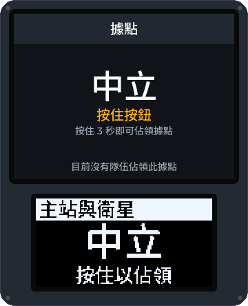
標靶會隨機亮起某一隊的顏色幾秒鐘，亮著的時候打中它就替那一隊得分。這個遊戲已在軟體中寫好並測試；它需要的標靶擴充模組（一塊有命中感測器和燈環的靶板）還沒做出來。
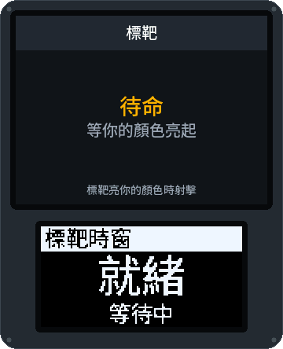
終端機在按鍵上出一道謎題：根據有幾個數字位置正確來破解密碼、依正確順序剪斷電線，或重複一串序列。答錯會鎖住一段時間。破解後可以揭露另一個任務目標的密碼、得分，並佔領這台終端，直到另一隊再駭回去。已在軟體中寫好並測試，還沒在場地上用手機玩過。
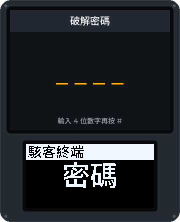
一隊要護送自己的 VIP（一位從 App 分享位置的玩家）或貨物（一支有 GPS 的手機）到撤離區；另一隊要阻止他們。沿途的檢查點盒子在被某隊守住時會得分。位置資料只留在場地控制器和手機上；只有「已撤離」會傳出去。已在軟體中寫好並測試，還沒用真實的 GPS 玩過。
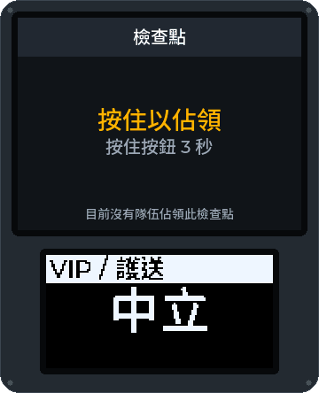
各隊佔領工廠盒子，守住時工廠就會產生金錢。玩家在自己隊伍的工廠掃描標籤收取金錢，帶著它穿越場地，再到銀行盒子存入換成分數；場地控制器會記住每位玩家身上帶了多少，所以可以在一個盒子收取、在另一個盒子存入。在醫護包接受治療的玩家會失去身上的錢，第一個存到目標金額的隊伍可以獲勝。已在軟體中寫好並測試，還沒在真正的盒子上玩過。
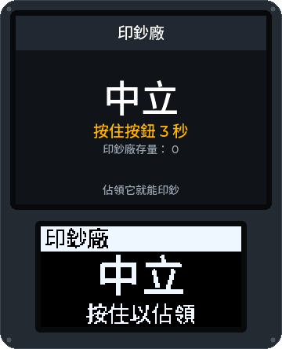
場上有好幾個盒子，但同一時間只能佔領其中一個，兩隊都會知道是哪一個。佔有啟用中盒子的隊伍每滿一分鐘就得分；佔有夠久之後，這個盒子就算該隊完成並鎖定，下一個盒子會通知兩隊。順序可以是 GM 的清單、盒子編號或隨機；最後一個盒子完成，或有隊伍達到目標分數，遊戲就結束。已在軟體中寫好並測試，還沒在真正的盒子上玩過。
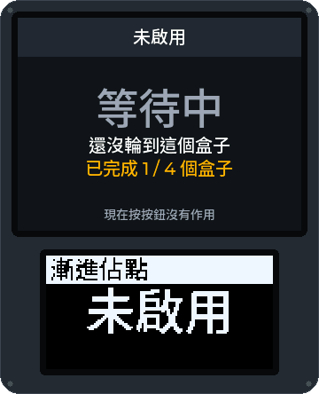
在同一個盒子上搭配任何模式執行：按鍵密碼可以給分、給提示或解鎖，GM 看得到誰用了哪個密碼、當時哪一隊守著這個盒子。
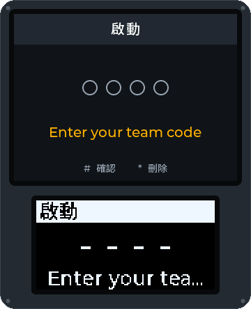
Money Factory、搶旗、你們社團自己的玩法……模式都是簡短的腳本。用遊戲模式點子範本提出你的想法，或把做好的模式以經簽署的套件分享到模式登錄庫。
八張擷取自真正 Field Box 韌體（ESP32、LVGL 9.2、320 × 240 TFT）的畫面，在 Wokwi 模擬器中執行，從遊戲管理員的 PIN 碼到拆除炸彈。這裡的盒子介面是英文的。韌體現在已經能在真實的 Heltec V4.3 上執行；這些截圖來自模擬器。點一下截圖可以看大圖。


組裝手冊（英文）有 Heltec WiFi LoRa 32 V4 的完整接線圖和第一次燒錄的教學。